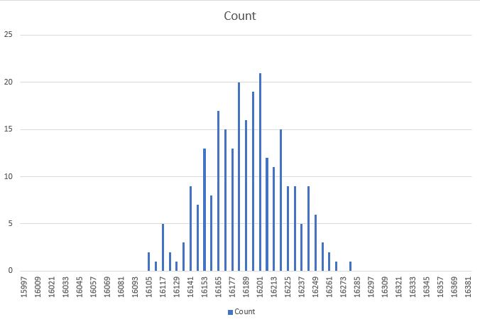

EENG 383
Lab 15 - In-lab activitiesRequirements
Working in teams of two, read through the following lab activity and perform all the actions prescribed. You do not need to document bullet items. Make a record of your response to numbered items and turn them in a single copy as your teams solution on Canvas using the instructions posted there. Include the names of both team members at the top of your solutions. Use complete English sentences when answering questions. If the answer to a question is a table or other piece of art (like an oscilloscope trace or a figure), then include a sentence explaining the piece of art. Only include your answers, do not include the question-text unless it is absolutely needed.Objective
Inversense MPU-6050
Before you start on this lab, it is worth mentioning that the MPU-6050 has two datasheets; the "Product Specification" and the "Register Maps and Description". The Product Specification describes the electrical characteristics of the MPU-6050, the architecture of the chip, the communication interface, and the sensor performance. It tells you what the chip can do.The Register Maps and Descriptions tells you how to get data from the MPU-6050. To do this, you need to interface to the myriad of internal registers inside the MPU-6050. This inLab will introduce you to the most important of these registers.
If it's not clear by now, you should download both these documents by looking up the MPU-6050 in Digikey (part number 1428-1007-1-ND).
The Inversense MPU-6050 contains a 3-axis accelerometer and 3-axis gyroscope. Meaning that this device can measure accelerations along 3 perpendicular axis and can measure the rate of rotation along 3 perpendicular axis. These axis are aligned with the faces of the device package. To understand this relationship answer the following question.
- In the MPU6000 Datasheet, look for the Orientation of Axes section.
Use the information here to add "+X", "+Y" and "+Z" to the three axis
and three rotational directions to the image below. Note the "+Z" is
missing from its axis.

- Look closely at the MPU-6050 chip and find the white dot indicating pin 1.
Now hold the daughter board in front of you so that you can read the
white silk screen "POWER PACK" as shown in the image below. In
this orientation, the you can move the daughter board to the forward, back
,left, right, up and down. Up and down are not shown in the image, but
correspond to moving the board up off the desk or pushing the board down
towards the floor.

Now, relate the directions of the MPU-6050 axis, explored in the previous question,to the directions of the daughter board can be moved. In the table below, use the terms forward, back ,left, right, up and down in the "Daughter board direction" column.MPU 6050 axis Daughter board direction +X -X +Y -Y +Z -Z - In the MPU-6050 Product Specification document, look for the MPU-60X0 Overview section. What is the difference between the serial interface of the MPU-6000 and MPU-6050? Use your own words, do not plagiarize.
MPU-6050 function
Now, lets dive into how the MPU-6050 reports acceleration and rotation rates. The MPU-6050 measures the amount of acceleration along each of its 3 axis using the units of g's, equivalent gravitational force. 1g is the force felt by a stationary object on the surface of Earth. If you are holding the MPU-6050 in front of you so that you can read the text, then the +Z axis is pointed up. In order to hold the GY-521 like this, you are exerting an upward force on the board, otherwise the board would fall.The MPU-6050 also measures the rotational velocity around each of its 3 axis using the units of °/s. If you turn around once, you have turned, 360°. The MPU-6050 measures how fast you turn, your rotational velocity. So if you turn around in half a second, your rotational rate is 720°/s. If it takes you 2 seconds to turn around, your rotational rate is 180°/s.
-
The MPU-6050 has upper and lower limits on the acceleration and
rotational rates that it can measure. These limits are configurable,
allowing you maximize the sensitivity of the MPU-6050 in your particular
application. Look in the MPU6000 Register Maps and Description document
to complete the following table.
Note, the top row is the name of the register.
ACCEL_CONFIG GYRO_CONFIG AFS_SEL[1:0] Full Scale Range FS_SEL[1:0] Full Scale Range 0b00 ±250°/s 0b01 0b01 ±8g 0b10 0b11 0b11
Accelerometer
The accelerometer in the MPU-6050 outputs a 16-bit 2's complement value that is proportional to the measured g-force on each axis over the full scale range. Since g-force can occur in a direction opposite the measurement positive axis, the accelerometer accommodate negative accelerations with its 2's complement output. To convert the numerical output from the accelerometer into g-force, you need to know the full scale range and then perform some simple dimensional analysis.For example, say the MPU-6050 is configured with a full scale range of ±8g. Then the largest positive 16-bit 2's complement value, 215 corresponds to 8g's. Then the largest negative 16-bit 2's complement value, -215 corresponds to -8g's. You can use this to form the ratio 8g's/215 to convert numerical outputs from the MPU-6050 into g's.
For example, say the MPU-6050 is configured with a full scale range of ±8g and output the value 0xD36A as the acceleration on its Z-axis. I like the windows calculator to convert between bases.
- Click on the 3 horizontal lines in the upper left and select Programmer.
- Click on QWORD until you get WORD - this sets the word size to 16-bits.
- Click on Hex to enter values in as hexadecimal.

Thus, 0xD36A, interpreted as a 16-bit 2's complement value is equal to -11,414. I will use the units "counts" to refer to the accelerometer output. To perform the calculation below, you should switch the windows calculator back to scientific mode, otherwise you will not get any fractional digits.
8 g's -11,414 counts * --------- = -2.79 g's 215 countsThe following question asks you to put the MPU-6050 into different static (non-moving) orientations and determine the numerical output of the registers and the interpreted values based on the FSR setting. It is important to remember that the g-force is a vectored component along each of the MPU-6050's axis. So for example, if you tilt the MPU-6050, the earth's gravitational force will be some vector component along each of the 3-axis. To calculate how much force is applied along each of the MPU-6050's axis you need to calculate the vector projection of the upward force of 1-g (applied to keep the MPU-6050 from falling) onto each of the MPU-6050's 3 orthogonal axis. This is nothing more than multiplying the 1 g of force by the appropriate sin or cosine.
In the pictures below, the MPU-6050 has been draw in different orientations. The purple surface is the top of the MPU-6050 and the circle is the white dot. As a result, the MPU-6050 is upright in diagrams A, B, C, D and is upside down in E, F, G, and H.


-
Complete the following table by calculating
the expected MPU-6050 output in counts and g's assuming that the MPU-6050
is configured with a full scale range of ±2 g's.
Orientation X g's X 16-bit 2's Y g's Y 16-bit 2's Z g's Z 16-bit 2's A B 0.707 C D E F -0.707 G H 0
Rate Gyroscope
The rate gyroscope in the MPU-6050 outputs a 16-bit 2's complement value that is proportional to the measured angular velocity around each axis over the full scale range. Since angular velocity can occur in a direction opposite the measurement direction, the rate gyroscope accommodate negative angular velocities with its 2's complement output. To convert the numerical output from the rate gyroscope into angular velocity, you need to know the full scale range and then perform some simple dimensional analysis.For example, say the MPU-6050 is configured with a full scale range of ±500°/s. Then the largest positive 16-bit 2's complement value, 215 corresponds to 500°/s. Then the largest negative 16-bit 2's complement value, -215 corresponds to -500°/s. You can use this to form the ratio 500°/s/215 to convert numerical outputs from the MPU-6050 into °/s.
For example, say the MPU-6050 is configured with a full scale range of ±500°/s and output the value 0xD36A as the angular velocity around its Z-axis. Using the Windows calculator, 0xD36A, interpreted as a 16-bit 2's complement value is equal to -11,414. I will use the units "counts" to refer to the rate gyroscope output. To perform the calculation below, you should switch the windows calculator back to scientific mode, otherwise you will not get any fractional digits.
500°/s -11,414 counts * --------- = -174 °/s 215 countsThe following question asks you to calculate the angular displacement of the rate gyroscope that has measured an angular velocity for some duration. The angular displacement is just the angular velocity multiplied by the duration. Assuming the MPU-6050 is configured with a full scale range of ±500°/s.
- Complete the following table. Treat each row separate from all
the other rows - do not accumulate the angular displacements down the table.
Gyroscope output angular velocity duration angular displacement 0xD36A -174° 0.1 second -17.4° 0x3E31 0.2 second 0xB2C4 -17.4° 100° 25° -36.4° 0.6 seconds 0.3 second -26.6°
Digital Low Pass Filter
Noise in sensor systems is a fact of life. The sources of this noise are varied and in many cases baked into the fabric of our universe - there is no way around them. As a result the measured output of the MPU-6050 will show variation even when the MPU-6050 is perfectly still. If you looked at the samples over time, you would find that they fall on a normal distribution. I made the following histogram from 256 acceleration samples taken while the MPU-6050 was sitting quietly on my desk. The RMS noise of the MPU-6050 is equal to the standard deviation of this Normal distribution.
To combat noise, the MPU-6050 comes with a configurable digital low pass filter (DLPF). The DLPF averages together N accelerations samples and then only outputs the average. Since the DLPF uses several acceleration measurements to produce one average measurement, the rate which samples are produced is reduced, but the RMS error goes down. This reduction is measurement rate is described in terms of bandwidth. The bandwidth describes the fastest signal that the MPU-6050 can accurately measure.
In order to understand the idea of sensor bandwidth let us image that we are recording the acceleration of the MPU-6050 as it is being moved up and down in a sinusoidal fashion. This up and down sinusoidal movement (change in position) will cause a sinusoidal acceleration, because acceleration is the second derivative of position and the second derivative of a sinusoid is a sinusiod. It may surprise you to learn that the accuracy of the acceleration reported by the MPU-6050 depends on the frequency at which it is being moved up and down. At low frequencies, the MPU-6050 faithfully measures and reports its acceleration. However, as the frequency is increased, the accelerations reported by the MPU-6050 becomes lower than the acceleration the MPU-6050 is actually experiencing. The frequency at which the reported acceleration is 0.707 times smaller than the actual acceleration the MPU-6050 is experiencing is called the bandwidth. This ratio of output to input of 0.707 is equivalent to -3dB of attenuation between the input and output signals.
The relationship between the bandwidth and RMS noise is characterized by a parameter called the Power Spectral Density. Lookup this value in the MPU-6050 Product Specification document. Note the units are µg/Hz0.5. You can calculate the expected RMS noise by multiplying the Power Spectral Density by the square root of the bandwidth.
-
Now you will apply these ideas to complete the following table. The MPU-6050 has a
configurable DLPF which sets the maximum bandwidth. Look in the MPU6000 Register Maps
and Description document for the CONFIG register. Use the information in the DLPF table
to complete the Bandwidth column in the table below. Next multiply the square root of
the bandwidth by the Power Spectral Density you looked up earlier and put the result in
the column "RMS noise (µg)". Convert the RMS noise (µg) value into ADC
counts (assuming a ±2 g full scale range) and put the value in the "RMS noise (counts)"
column. You will need to come back and complete the "RMS noise (measured counts)"
after you have loaded the Lab 15 firmware on the PIC.
DLPF_CFG Bandwidth RMS noise (µg) RMS noise (counts) RMS noise (measured counts) 0 1 89 2 3,878 3 4 21 Hz 5 6
Lab 15 firmware
It's time to install the software that you will be using for this lab using the following instructions.- Attach the USB cable between your PC and your development board. The green power-on LED should be illuminated.
- Launch MPLab X
- Attached your SNAP programmer to your PC with a USB cable.
- Connect your SNAP programmer to the development board.
- Create a directory /EENG383/lab/lab15
- Download Lab15.X.production.hex into the lab15 directory by right mouse clicking on the link and selecting "Save link as …", or whatever your browser calls it
- In MPLab X, File → New Project
- In the New Project pop-up (Step 1. Choose Project)
Categories: Microchip Embedded
Projects: Prebuilt(Hex, Loadable Image) Project
Next> - In the New Project pop-up (Step 2. Create Prebuilt Project)
Prebuilt Filename: navigate to /EENG383/lab/lab15/Lab15.X.production.hex
Device: PIC18F26K22
Hardware Tool: SN: BURxxxxxxxxx where x's are ID
Next> - In the New Project pop-up (Step 3. Select Project Name and Folder)
Project Name: Lab15.X.prebuilt (default)
Project Location: \EENG383\lab\lab15 (default)
Finish
- In the New Project pop-up (Step 1. Choose Project)
- Click green Play button in toolbar at the top center of the screen,
- Click OK to the MPLAB pop-up "CAUTION: Check that the device...."
- In the console area at the bottom of the MPLab X window you should
see the following activity in a tab labeled "SNAP".
***************************************************** Connecting to MPLAB Snap... Currently loaded versions: Application version............00.03.23 Boot version...................01.00.00 Script version.................00.03.33 Script build number............0540a22e50 Target device PIC18F26K22 found. Device Id Revision = 0x4 Erasing... The following memory area(s) will be programmed: program memory: start address = 0x0, end address = 0x52bf program memory: start address = 0xeb40, end address = 0xffff configuration memory Programming/Verify complete
Now go in and launch PuTTy using the correct serial port, but with Baud Rate 115200. This non-standard Baud rate will expedite spooling data stored on the SD card.

Once you have properly configured PuTTy, type in "?" to see the following menu of functions provided by this software.
------------------------------------------------- MPU6050 configuration Error with stored accelerometer FSR value = FF Error with stored gyroscope FSR value = FF Error with stored accelerometer DLPF value = FF Unknown AXIS being read = FF Unknown sampling rate = FF ------------------------------------------------- ?: Help menu Z: Reset processor z: Clear the terminal u: autonomous Usage instructions ------------------------------------------------- i: Initialize SD card -/+: decrease/increase read address b: read a Block of 512 bytes from SD card ------------------------------------------------- d: set digital low pass filter scale and store in PIC EEPROM f: set accelerometer FSR scale and store in PIC EEPROM F: set gyroscope FSR scale and store in PIC EEPROM E: Set the type of data that is logged and store in PIC EEPROM S: Set the sample rate of the MPU6050 and store in PIC EEPROM ------------------------------------------------- o: reset accelerometer w: Write an arbitrary MPU6050 register and value r: Read an arbitrary MPU6050 register A: read all the registers from the MPU6050 a: read acceleration data registers from the MPU6050 g: read gyroscope data registers from the MPU6050 n: collect and spool 512 samples ------------------------------------------------- R: Record selected, from E function, data to SD card s: spool data on SD card data to terminal -------------------------------------------------There is a lot going on here, so let's take a few minutes to provide an overview. You will gain familiarity with these commands through the course of completing this lab.
I designed the software you have just downloaded to store acceleration or gyroscope data to the SD card; a process called data logging. You can store only 1 type of data, one of the 3 acceleration axis or 1 of the 3 rotational rate axis. You can change the rate at which this data is stored and the DLPF setting. Together I will call this your "MPU6050 configuration".
An important requirement in the design of this software was that I wanted you to be able to collect data without having the development board/daughter board combination tethered to a PC by the USB cable. In order to do this, the PIC must be able to remember your MPU6050 configuration. I accomplished this by storing your configuration in the EEPROM module inside the PIC 18F26K22. This brings us back to the menu displayed on PuTTy. The top 5 lines are the configuration currently stored in the EEPROM. The EEPROM inside the PIC is cleared to 0xFF's when you program the PIC. This is situation is shown in screen capture above and reproduced below.
------------------------------------------------- MPU6050 configuration Error with stored accelerometer FSR value = FF Error with stored gyroscope FSR value = FF Error with stored accelerometer DLPF value = FF Unknown AXIS being read = FF Unknown sampling rate = FF -------------------------------------------------To start, change the MPU6050 configuration, to these settings:
- DLPF at 94 Hz
- Accelerometer is +/- 4g's
- Gyroscope FSR is +/- 250 degree/sec
- Recording the Z-axis acceleration every 5000 us
------------------------------------------------- d: set digital low pass filter scale and store in PIC EEPROM f: set accelerometer FSR scale and store in PIC EEPROM F: set gyroscope FSR scale and store in PIC EEPROM E: Set the type of data that is logged and store in PIC EEPROM S: Set the sample rate of the MPU6050 and store in PIC EEPROM -------------------------------------------------Let's look over some of the menu items to get a better understanding of this interface and how you will use it to accomplish the goals of this lab.
- w and r
Allow you to read or write any register inside the MPU-6050. This is handy if you want to experiment with the MPU-6050 configuration. All values entered are assumed to be in hex. For example, try reading the WHO_AM_I register located at address 0x75 using the r function, yields the following result.> r Enter 1 or 2 digit address then hit Enter >0x75 I2C1_Read1ByteRegister(0x68, 0x75) = 0x68
- A
A hold-over function from the previous lab, this function prints the value of a bunch of important registers in the MPU-6050. - a and g
These two menu options display the most immediate acceleration and gyroscope values as raw 16-bit values and interpreted as 16-bit 2's complement numbers. With your development board flat on your desk, press them and you should get the following values (assuming you configured your MPU-6050 as described in the previous step).> a Accelerometer values X: fe6a -406 Y: 00aa 170 Z: 1fbf 8127 > g Gyroscope values X: fff4 -12 Y: 0029 41 Z: ffe9 -23
- n
Records 512 samples from the MPU-6050 according to the current configuration and then spools them to the terminal. This is a handy function to quickly grab a bunch of samples to plot in Excel. Remember that selected text in PuTTy is automatically put into the copy buffer. So to cut-and-paste data from PuTTy into Excel, just select the text in PuTTy and then Ctrl-V in Excel. - R
This function allows you to record samples from the MPU-6050 to the SD card according to the current configuration. While samples are being recorded the green LED on the daughter board will flash every time a buffer of 512 bytes fills. When you press any key in PuTTy, recording will terminate as soon as the last 512 is filled with samples. Behind the scenes, the firmware records one extra block of data at the end of the sampled data. This block consists of all 0xFF's and denotes the end of the recording. - s
This function spools the data on the SD card to the PuTTy terminal, similar to the function you implemented in Lab 9. This function is a little bit more advanced as the spooling continues until it encounters a block consisting of 512 0xFF's. When it does, spooling stops. Of course, the block consisting of 0xFF's is not printed.
Autonomous Mode
One of the requirements was to enable recording of MPU-6050 data while the development board/daughter board combination was not tethered to the PC. This is what I call autonomous mode. In order to run in autonomous mode you will need a pair of AAA batteries installed in the daughter board's battery holder. With batteries installed, unplug the daughter board from the USB cable. When providing power from AAA batteries, you will turn the development board on and off using the ON/OFF slide switch on the daughter board. However, for this test you will leave the development board plugged into the PC through the USB cable so that the board gets power. You will use the following procedure to operate the development board/daughter board combo in autonomous mode. While performing the following procedure, you will need to focus on the READY, RECORD and FINISH LEDs as well as the TOP and BOTTOM buttons on the daughter board.- Power on the daughter board, wait for the red FINISH LED to illuminate.
- While holding down the TOP push button, momentarily press the RESET button.
- The yellow READY LED should stay illuminated, you can release the TOP button now.
- The system is now ready to record data onto the SD card. To start recording, briefly press the BOTTOM push button.
- The green RECORD LED should be flashing. Every flash is a block being recorded to the SD card.
- To stop recording, briefly press the TOP button. After the last block is written to the SD card, the red FINISH LED will illuminate. A block filled with 0xFF's has been written after your stored data so that the spool function will automatically stop.
Initializing SD card CMD0, Reset Response: 1 CMD1, Init Response: 0 Block Length Response: 0 Initializing: acceleration scale, gyroscope scale, dlpf scale Finished initialization of accelerometer In autonomous record mode - press bottom button to start data logging. Data logging started. Press top button to stop. Data logging stopped. Terminal Ready.
Finishing up the DLPF table
You still have to complete the "RMS noise (measured counts)" column in the DLPF table you started a while back. Let's start that by configuring the MPU-6050 as follows, note that this text appears at the top of the menu.MPU6050 configuration Accelerometer FSR is +/- 2 g's Gyroscope FSR is +/- 250 degree/sec DLPF set to 260 Hz bandwidth accelerometer Z-axis sample every 5000 usNext collect 256 samples using the "n" function in the PuTTy terminal. Copy these samples and paste them into column A of the noiseAnalysis.xlsx spreadsheet. Yes, you should overwrite the values that I put into columns A and E - I put them there to give you an idea of what sorts of values you could expect. The spreadsheet will automatically calculate the average and standard deviation. Copy the standard deviation value from cell L5 into the "RMS noise (measured counts)" value in the DLPF table above.
Change the DLPF value and repeat this procedure to determine the standard deviation for the remaining 6 DLPF settings. Copy the remaining standard deviation values into the table. You should find good agreement between the measured RMS error and the calculated RMS error. I interpret good agreement to mean "within 20%". If you find significant deviation between the 2, re-run the data collection as there was probably some unanticipated environmental influence.